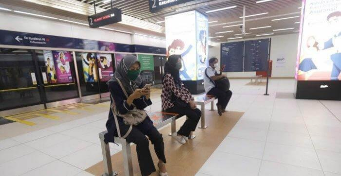
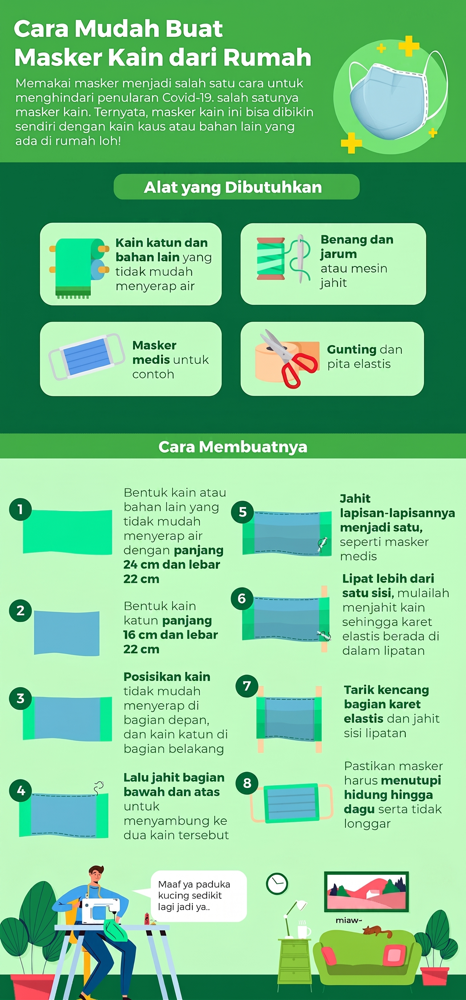
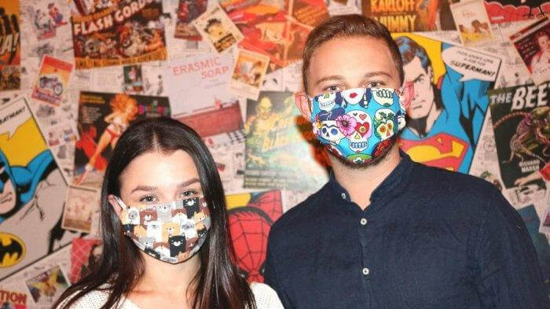

Longform Journalism
#GerakanMaskerKain, Tren Baru yang Patut Disimak!
In collaboration with
Pasti tidak asing melihat idol Korea kesukaanmu memakai masker kain? Schedule yang padat membuat mereka sering tertidur di pesawat dan membuat wajah para idol ini membengkak. Alhasil masker kain jadi solusi.
Di Indonesia sendiri, masker sekali pakai lebih disukai karena praktis, tanpa perlu dicuci. Namun, kini tren ini berputar dan mulai muncul #GerakanMaskerKain yang menginspirasi setiap orang untuk memakainya.
Semua ini berkat anjuran yang dilakukan pemerintah. Presiden Joko Widodo beberapa waktu lalu meminta masyarakat wajib menggunakan masker kain ketika keluar rumah. Apa yang ia sampaikan merupakan anjuran WHO untuk menangkal diri dari paparan penyakit menular.
Menurut situs Cambridge, bahan kain terbukti cukup efektif menahan partikel 1-Mikron dengan presentase 69 persen untuk masker berbahan kaos katun dan 62 persen untuk masker berbahan sarung bantal.
Anjuran ini tentu menjadi angin segar atas kelangkaan masker medis yang seharusnya diprioritaskan bagi pasien dan tenaga medis. Makanya sekarang enggak cuma Korean idol saja yang kemana-mana pakai masker kain. Kamu juga kudu gabung di #GerakanMaskerKain!

Penumpang memakai masker di Stasiun MRT Dukuh Atas, Jakarta Selatan, Senin (6/4/2020). Pemerintah mengeluarkan aturan kepada seluruh masyarakat agar wajib memakai masker apabila ke luar rumah.
Tak hanya sekadar lisan saja, kewajiban memakai masker juga mulai diterapkan secara serius oleh berbagai kalangan di Indonesia.
Pemprov DKI Jakarta misalnya, mewajibkan mereka yang menaiki angkutan umum seperti Busway, LRT, dan MRT untuk memakai masker dan tak memperbolehkan siapapun masuk jika tak menggunakan masker.
Karena di awal saya sampaikan yang sakit saja yang pakai masker, sekarang ndak. Semua orang yang keluar rumah wajib pakai masker.Presiden Joko Widodo
Istana Kepresidenan Bogor, 6 April 2020
Untuk penggunaan di luar rumah, masker kain yang dianjurkan tidak sembarangan. Gunakanlah masker yang memiliki tiga lapis, sehingga droplet atau cairan tak akan langsung masuk ke hidung atau mulut. Selain itu, masker tiga lapis semakin efektif menangkal virus atau bakteri.
Masker juga diharuskan mampu menutupi bagian hidung, mulut, dan dagu, serta tidak longgar sehingga bisa melindungi secara sempurna.
Menurut peneliti dari Universitas of Cambridge, masker kain yang baik haruslah terbuat dari bahan berupa katun dan kain sarung bantal.
Kedua bahan tersebut dipilih sebab nyaman, dan dengan kerapatan kain yang dimilikinya terbukti ampuh serta efektif menyaring partikel 1-Mikron.

Agar terjaga kesterilannya, masyarakat diharapkan tidak menyentuhnya dan mencuci tangan terlebih dahulu ketika mengunakan masker kain, sesudah mengenakan, dan ketika melepaskannya.
Masker pun harus diganti setiap harinya dan harus segera dicuci menggunakan deterjen hingga bersih, kemudian langsung dijemur dan disetrika agar kering maksimal.
Walaupun dinilai efektif, pemerintah tetap menganjurkan masyarakat untuk tidak keluar rumah, menjaga jarak aman 1-2 meter ketika di tempat umum, sering mencuci tangan, dan melakukan etika bersin serta batuk yang benar, yakni menutupinya dengan bagian dalam siku.
Nah, teruntuk kamu yang mungkin enggak punya waktu untuk membuat sendiri, bisa beli langsung di Tokopedia.
Mendukung #GerakanMaskerKain, Tokopedia, situs belanja dengan pilihan produk dan barang terlengkap, dan mencakup seluruh Indonesia, turut menggalakkan penggunaan masker kain kepada masyarakat lewat program Tokopedia Peduli Sehat.
Pada situsnya, Tokopedia menyediakan berbagai macam masker kain dengan berbagai motif dan model yang bisa dipilih masyarakat dengan harga bervariasi, baik untuk hijabers atau non-hijabers. Kamu bisa banget gonta-ganti warna masker kain, sesuai dengan style kamu. Jadi, tetap modis meski memakai masker.

Program ini tak hanya dilakukan agar mendukung pemerintah dan melindungi kesehatan masyarakat semata, tetapi juga turut membantu UMKM dalam memproduksi dan menjual masker kain.
Selain mampu menyediakan masker kain agar masyarakat semakin aman, cara ini dianggap mampu membantu perekonomian para pelaku UMKM di Indonesia yang kini tengah lesu.
Jadi demi mendukung para pelaku UMKM, pemerintah, petugas medis, dan menjaga kesehatan kesehatanmu saat terpaksa harus keluar rumah, jangan lupa beli dan pakai masker kain yang terbukti ampuh lindungi diri dari penyakit!